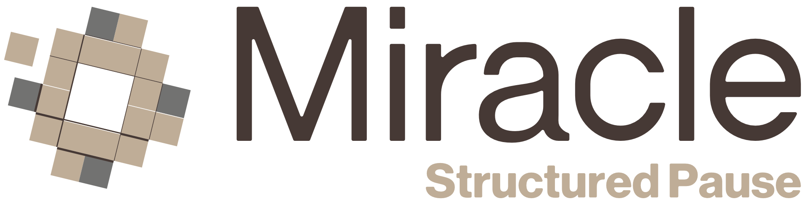

Management Standard for Decision Precision Under Pressure
Most organizations standardize performance—KPIs, processes, and accountability. However, the moment before a decision remains unstructured.
Reactive decisions are not a leadership weakness; they are a structural gap.
When pressure dictates commitment, decision precision declines, rework increases, and decisions are reopened.
Miracle implements a formal management standard for the pre-decision moment, integrated into:
Not motivational. Operational.
If your leadership team frequently revisits decisions, corrects misaligned commitments, or reworks completed initiatives, you have a structural gap.
lily@miracleofficial.com
+357 96 005 573